Port verification / Android + iOS
The mobile apps wrap the existing web build in Capacitor, so every screen is literally the same React bundle the browser runs. Here is the evidence, screen by screen, plus the three backend fixes the port genuinely required.
Left is the live web app in Chrome at a phone viewport. Right is the Android app on an API 35 emulator. Card deals differ between captures because every match deals fresh; nothing else does.
Entry screen with display name, three game cards and the public room list.
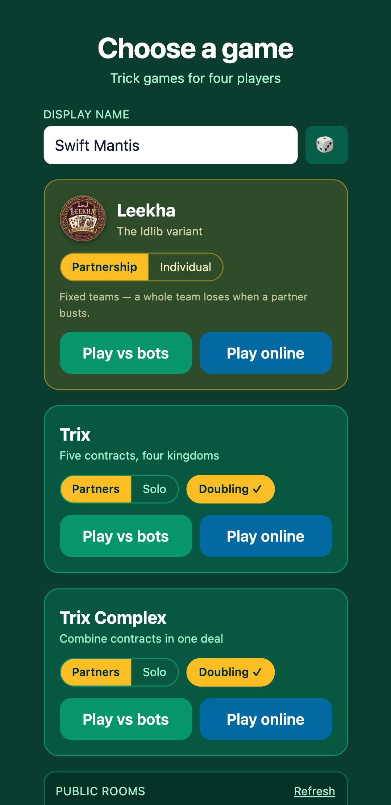
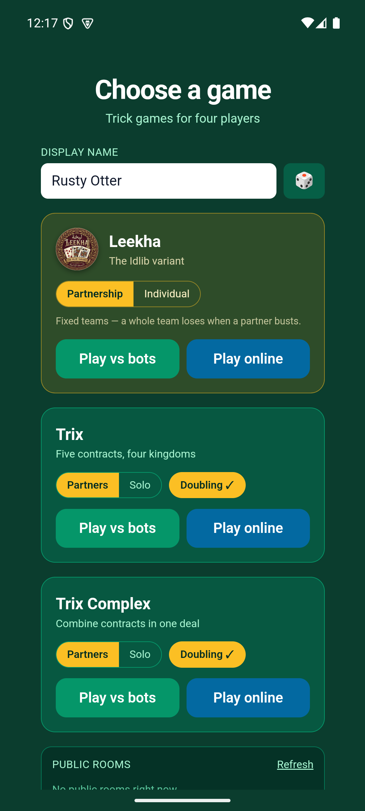
The highest-risk layout mode: dir=rtl mirrors the badge, the
toggle order and the button order. All three mirror identically.
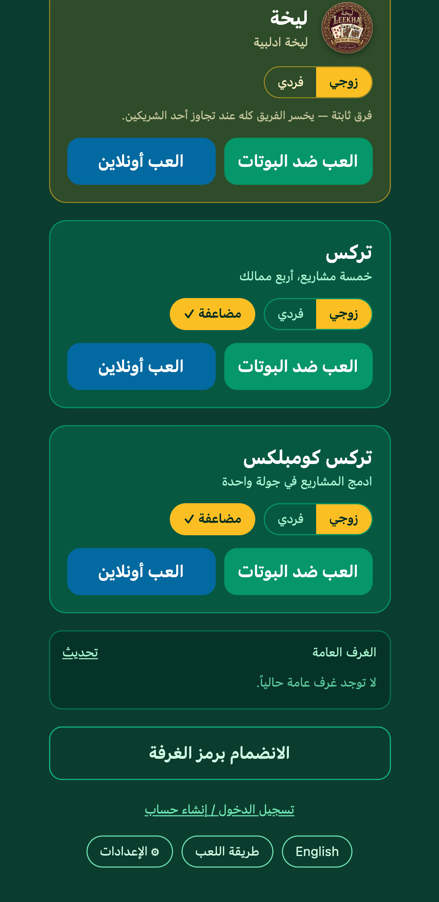
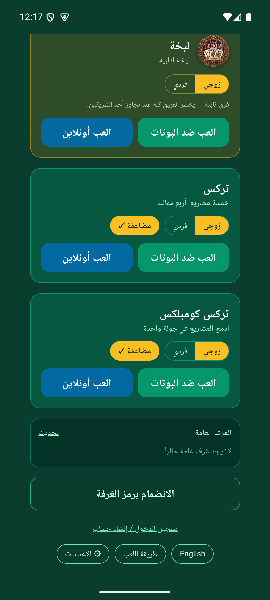
Avatars, trick circle, score HUD, passing panel and the two-story fanned hand. The bots replied, which proves the bot Web Worker runs in the webview.
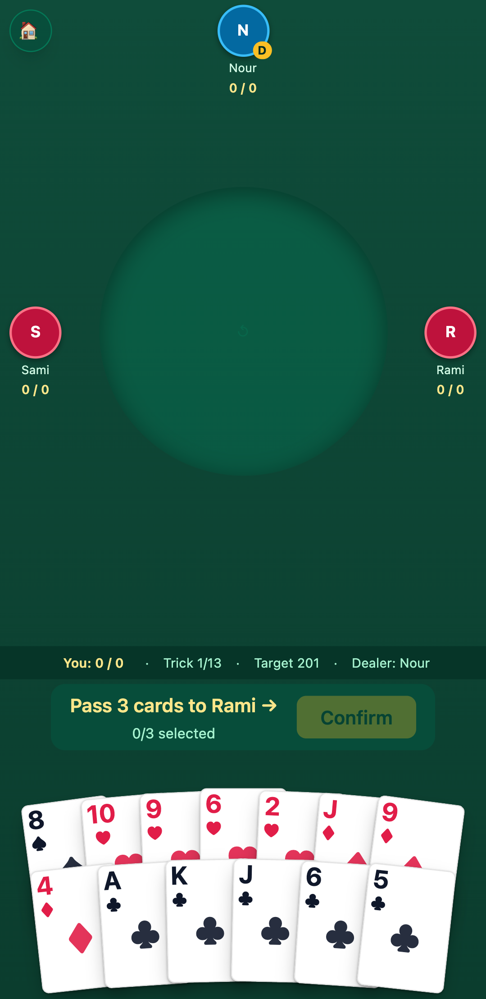
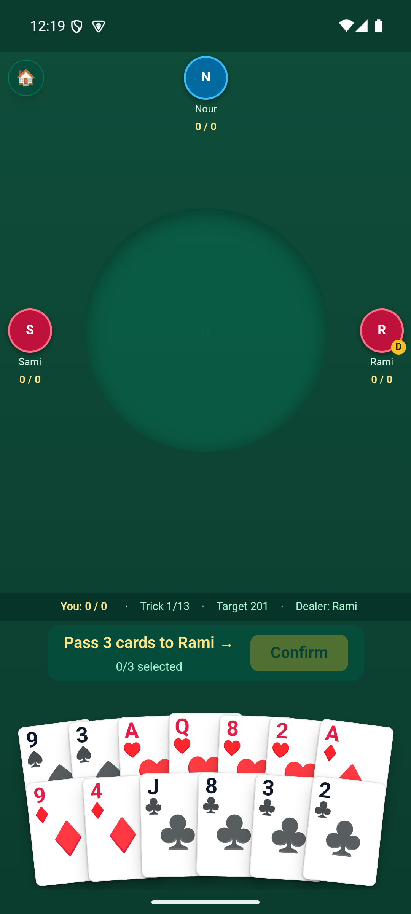
Trix is a second, entirely separate table UI: four suit lanes, contract chips and a different HUD. It carries over as exactly as Leekha does.
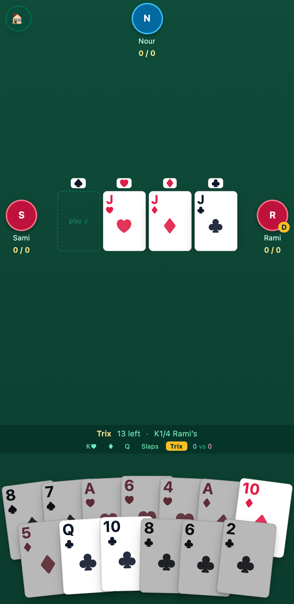
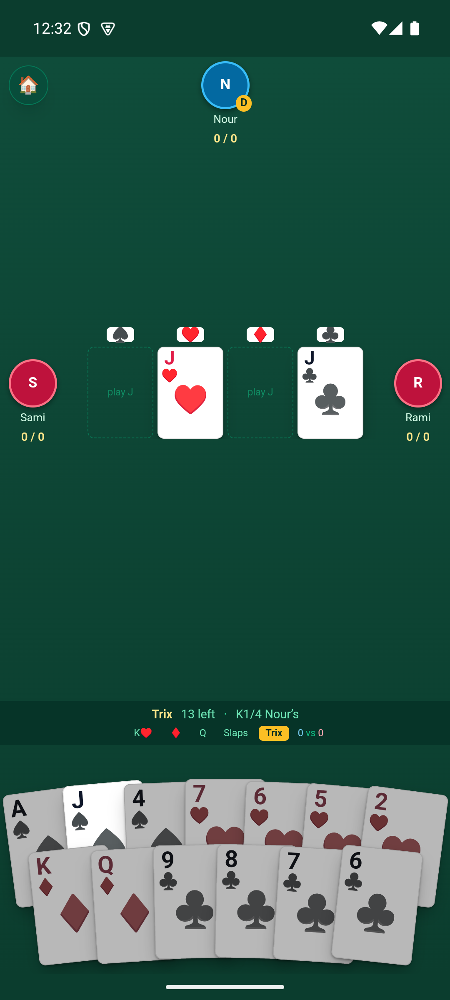
Trix runs its own room and its own drawer, so the first version of the back button quit the entire match on a press that was only meant to close the drawer. Back handlers now run innermost first. Left: drawer open. Right: after one back press, drawer closed and the match still running.
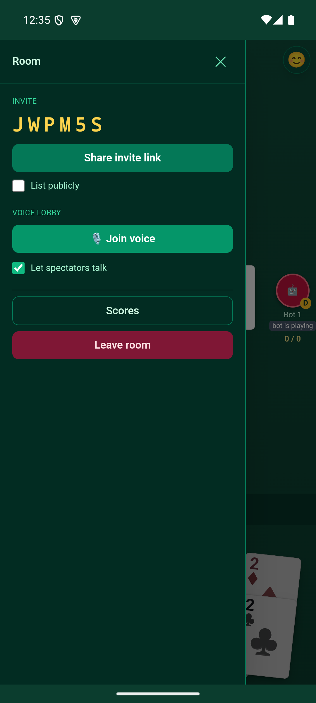
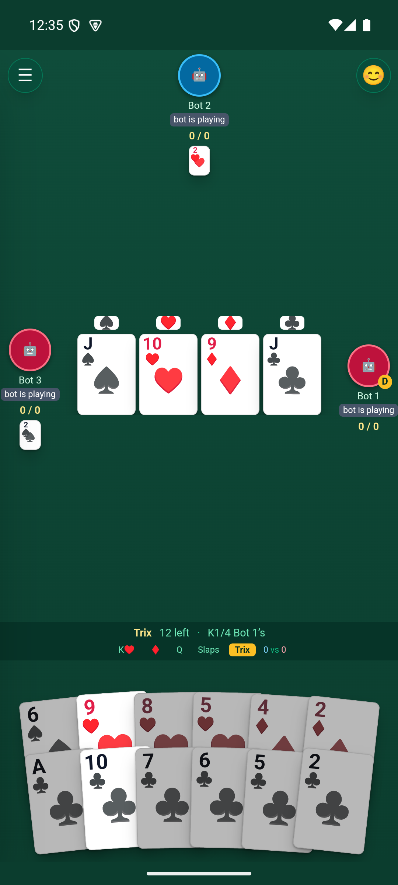
Every row, order, toggle state and preset carries over unchanged.
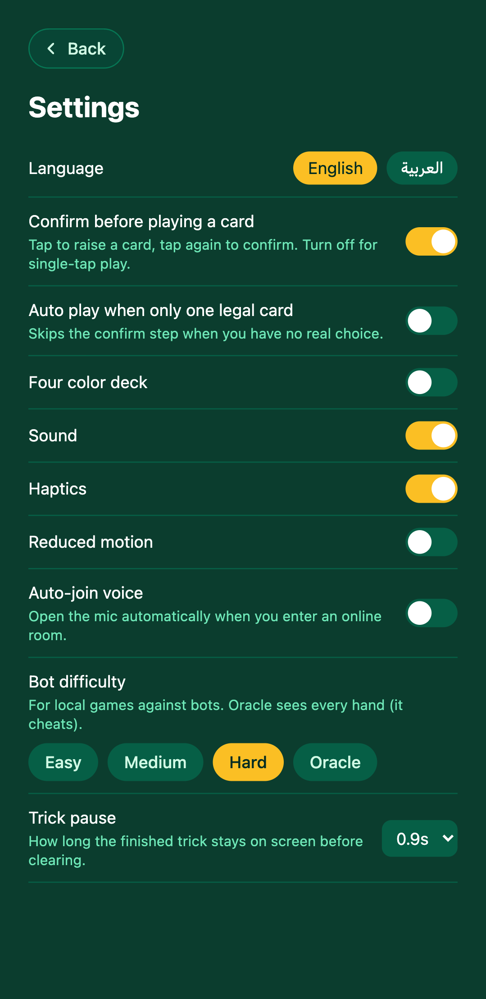
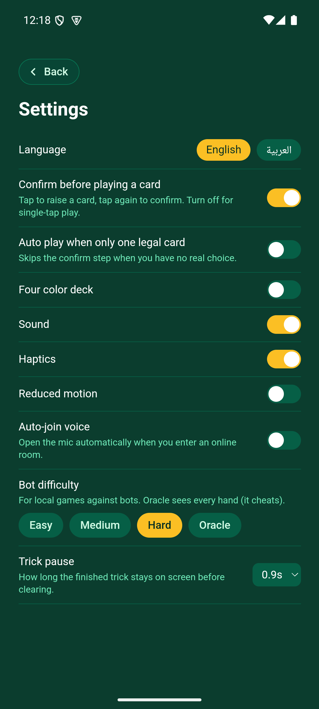
Long-form scrolling rules content.
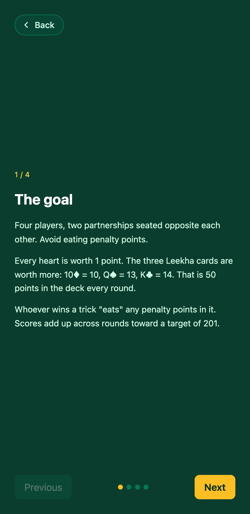
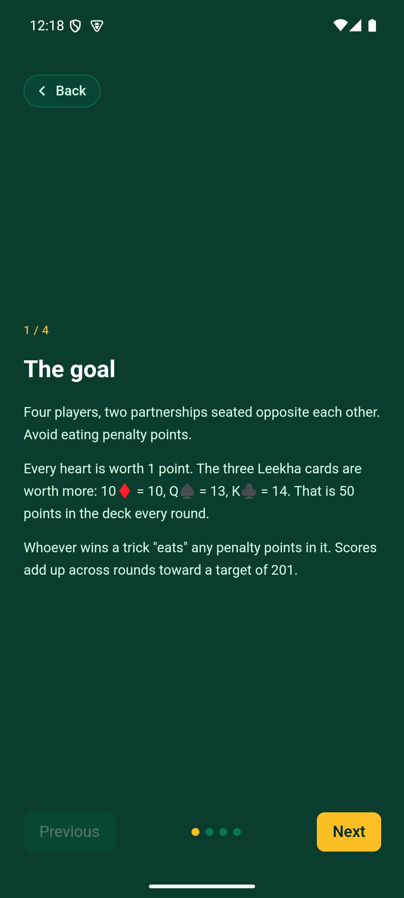
Rendering matches. Sessions need the server change below to survive a restart.
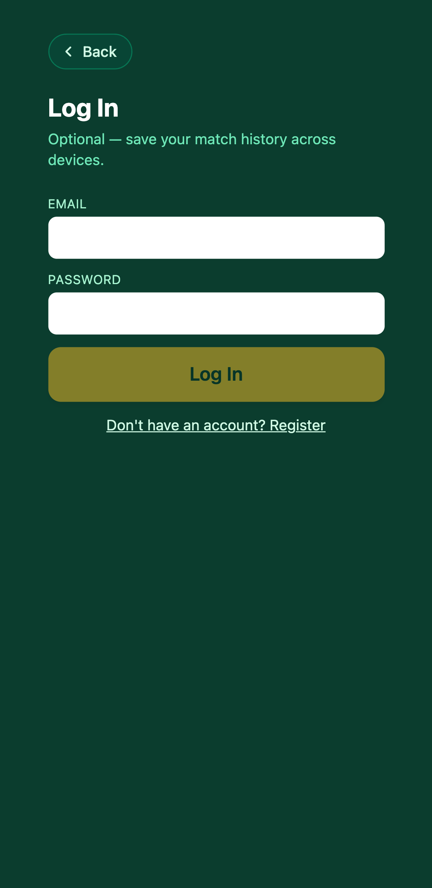
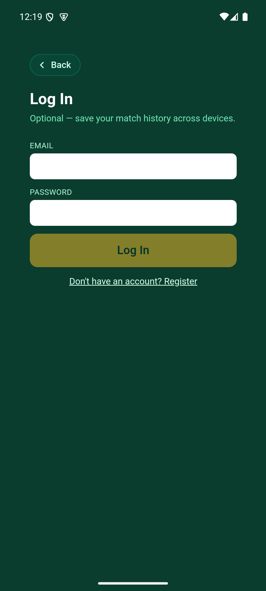
Rotating exposed a white strip where the camera cutout letterboxes the window. The browser never shows this because it has no window behind the page. Fixed by painting the Android window background felt green.
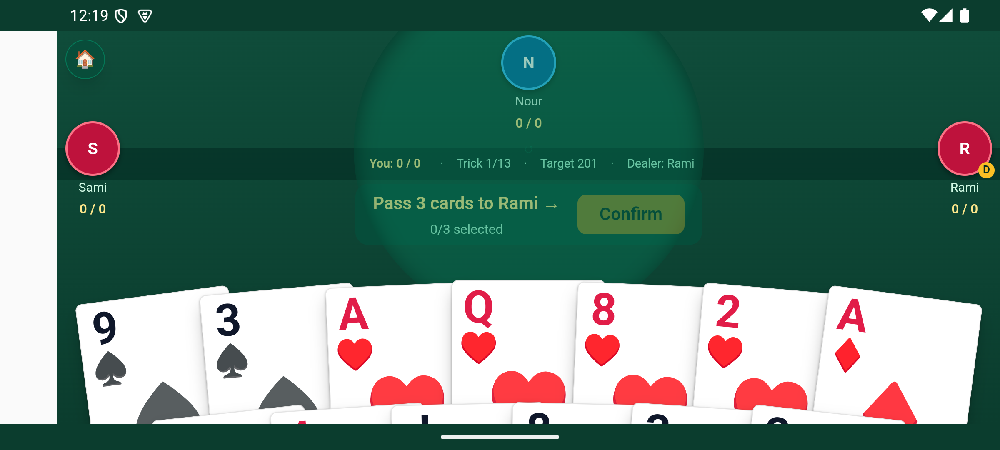
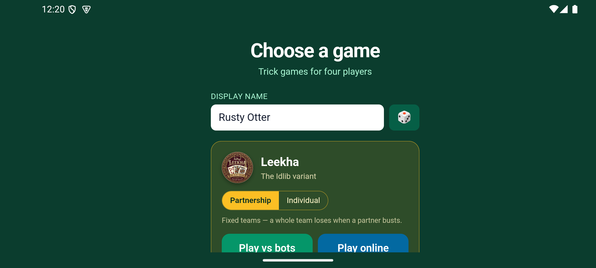
Reachable only once the bearer-token server change shipped. It renders its empty state, not an error, so the authenticated request went through.
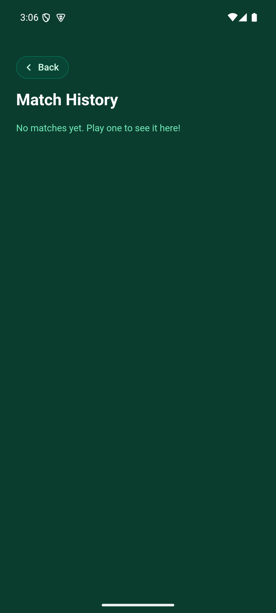
Match history is now reachable and was verified on the device after the server deploy: it renders its empty state rather than an error, which means the authenticated request succeeded. A side-by-side adds nothing while the test account has no matches, so it is shown once rather than as a pair. Round summary and match end need a full round played out, and since every deal is random the two sides would differ by content rather than layout, which makes a screenshot pair weak evidence. Both are ordinary components of the same bundle; neither is a known risk.
The assumption was that the same backend would work unchanged. It almost did. Three things break specifically because a webview's origin is the app bundle rather than the server.
socket.ts fell back to window.location.origin,
which in the shell is the local bundle. Every socket and API call would have
gone nowhere. Native builds now require an explicit VITE_SERVER_URL
and fail loudly at startup instead of dying as silent
connection errors.
The cookie is SameSite=Lax, and browsers refuse to attach a Lax
cookie to cross-site requests. Login would appear to succeed, then
/api/me would return 401 forever. The server now also accepts
Authorization: Bearer, and login and register return that token.
Web behaviour is untouched and still cookie based.
Room invites were built from window.location.origin too, so every
link shared from the app would have read https://localhost/?join=CODE
and worked for nobody. Invites now use the server URL.
Each of these was exercised on the emulator, not reasoned about.
Production now returns a token on login. Verified end to end on the device: sign
in, force-stop the app, relaunch, and it is still signed in, with
/api/history authenticating through the bearer header. The accounts
and history database survived the redeploy intact.
The Xcode project is scaffolded and configured, with the microphone usage string
and an audio session that keeps sound audible on silent, but this machine has only
the Command Line Tools so pod install never ran. Treat nothing about
iOS as verified until it builds on a Mac with Xcode.
The default server address is the Tailscale Funnel link. In a store release that address cannot be changed without resubmitting the app. Point it at a stable domain first. Relatedly, Apple guideline 4.2 rejects thin webview wrappers; offline bot play, haptics and a native audio session are a reasonable defence, but it is a real risk worth knowing.